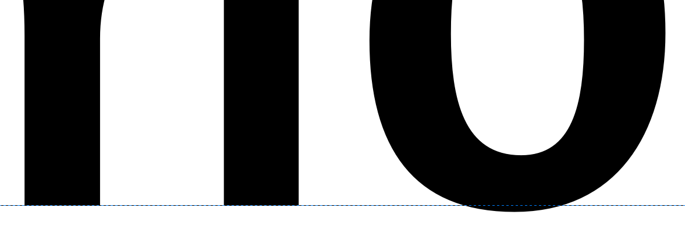
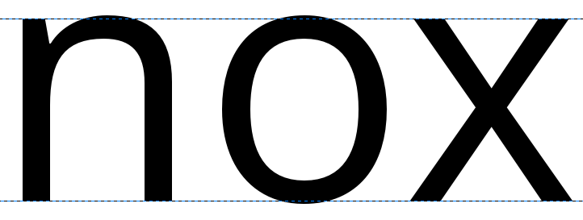
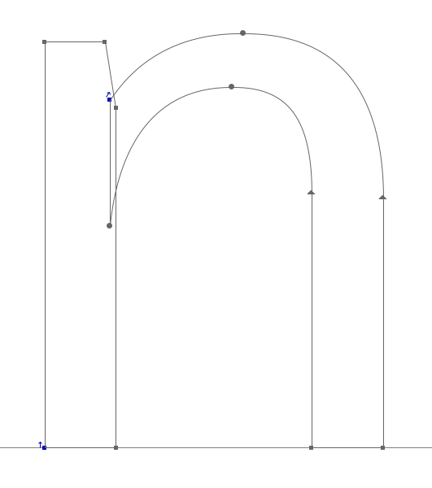
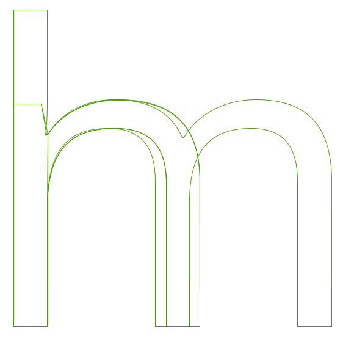
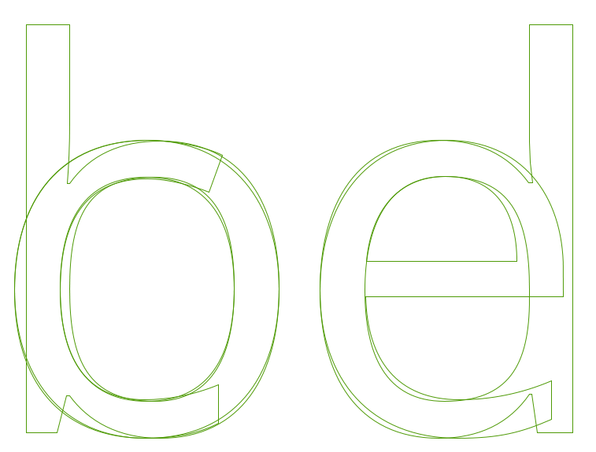

Создание ‘o’ и ‘n’
Существует множество подходов к созданию шрифта. Может быть полезно деконструировать более крупные процессы, чтобы быстро приступить к работе, и обеспечить прочную основу для символов всего шрифта. Популярный и ценный подход к этому — сначала разработать символы ‘o’ и ‘n’, фиксируя основные элементы формы, пространства и баланса, прежде чем объединять их для формирования других символов. Создание символов нижнего регистра ‘o’ и ‘n’ может предоставить нам некоторые фундаментальные формы и структуры, которые будут лежать в основе всех других необходимых символов.
Хотя конструкция ‘o’ может показаться довольно простой, все характеристики, упомянутые в главе “What is a font?”, здесь играют свою роль. Выбор, который делать в отношении каждой характеристики, должен быть осознанным.
Underhangs и Overshoots
Один из способов влияния оптических эффектов на дизайн шрифта заключается в том, как глазу кажутся кривые и прямые края. Например, чтобы кривая и прямой край выглядели так, как будто они правильно выровнены по базовой линии, кривая на самом деле должна располагаться немного ниже линии, создавая undershoot. Часть символа, которая опускается чуть ниже базовой линии, чтобы казаться сидящим на базовой линии, называется underhang —, показанная ниже. Без выступа символы с кривыми вокруг базовой линии будут выглядеть смещенными в строке текста.

Как и в случае с undershoot, область overshoot необходима для создания иллюзии выравнивания по высоте x и высоте шапки (смотреть ниже).


Проектирование строчной буквы ‘o’
Дизайн ‘o’ — это не просто вопрос черной части буквы. В то время как ‘o’ обеспечивается базовый вес и форму чаши, белый — или счетчик — обеспечивает размер и форму, используемые остальной частью шрифта. В общих чертах также можно заметить, что круглая форма ‘o’ будет повторяться в других символах. К ним относятся b, c, d, e, p и q, а форма также будет подразумевать форму и формы кривых внутри любых других символов шрифта, таких как O, C, D и Q.
Кроме того, белый цвет внутри ‘o’ следует использовать при проектировании интервала шрифта; ‘o’ также устанавливает эталонный ритм пробелов, используемых между всеми другими глифами шрифта. Эти два значения очень связаны, поэтому, по сути, также нужно будет определить количество пробелов, которые будут опорными сторонами ‘o’. В качестве общего принципа, за исключением наклонных или курсивных шрифтов, ‘o’ должен иметь одинаковое пространство слева и справа, а пробелы между строками символов ‘o’ должны уравновешивать пробелы внутри ‘o’.
Здесь глубокое вторжение на территорию интервалов и показателей, поэтому даже на этом раннем этапе можно захотеть взглянуть в главу [“Spacing, Metrics, и Kerning”], в которой рассматриваются основные последствия использования интервалов в шрифте. Это должно привести к хорошо расположенному символу ‘o’, который поможет с дизайном ‘n’.
Создать строчную букву ‘n’
Если устраивает форма и расстояние между строчными буквами ‘o’, как показано в образце строки, следующим шагом этого подхода будет создание подходящей формы, сбалансированного и хорошо расположенного строчного символа ‘n,’, который вставляется в строку с ‘o’.
Если посмотреть на анатомию ‘n’, можно разбить её на два или три компонента, состоящих из stem и curve. Этот подход может дать кратчайший путь к сохранению баланса и гармонии внутри персонажей по мере их формирования и роста набора персонажей. Глядя на образец ‘n’ ниже; разбит на две составляющие. Эти отдельные компоненты объединяются вместе, образуя ‘n’, но те же компоненты будут повторно использоваться позже при формировании других символов; например, основа слева от ‘n’ может использоваться для формирования левой основы всех других символов нижнего регистра.


Возвращаясь снова к главе, посвященной интервалам и метрикам, дизайн символа ‘n’ должен идти в ногу с процессом разделения символов ‘n’ и ‘o’ вместе.
Теперь, получив методы, которые использованы для создания символов ‘n’ и ‘o’, есть готовность расширить набор символов нижнего регистра. Качество компонентов основы и кривой ‘n’ и ‘o’ будет определять способ формирования других символов. Если изучить приведенные ниже символы из Open Sans, можно увидеть взаимосвязь между формальными аспектами отдельных символов и то, как они могут повторяться с некоторыми корректировками для формирования компонентов шрифта.

